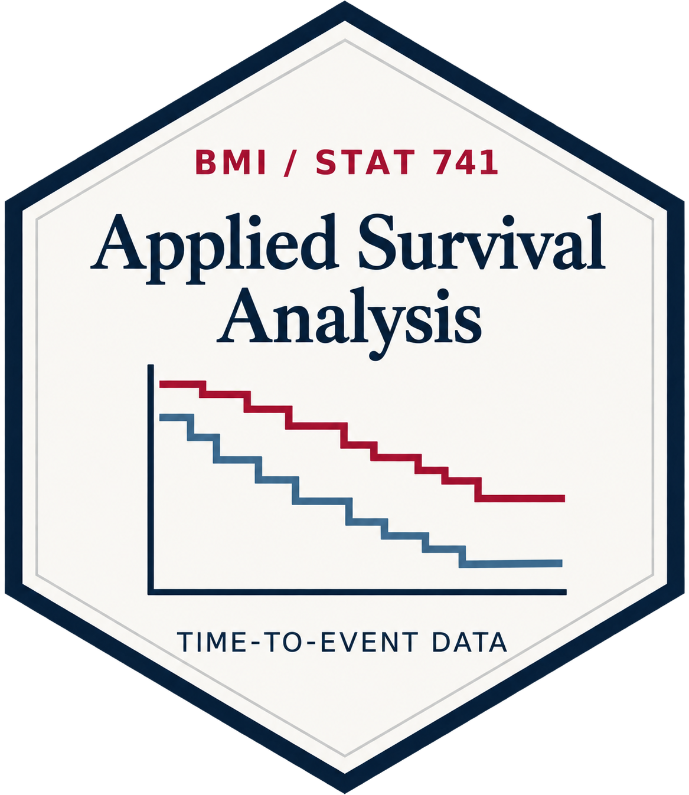
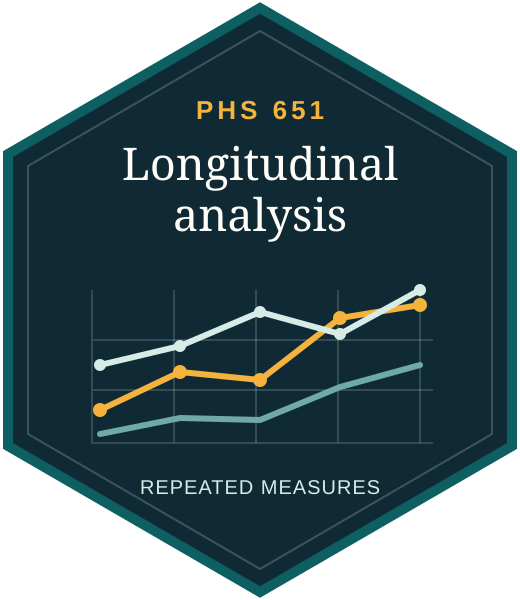
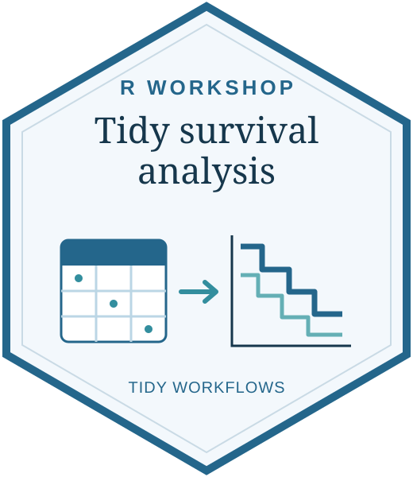
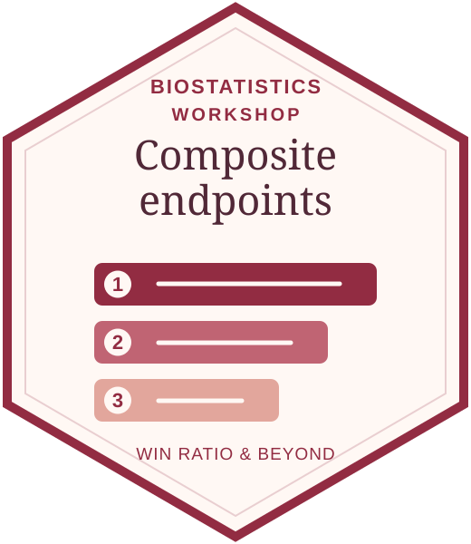

Lu Mao
Associate Professor of Biostatistics and Medical Informatics
Lu Mao, Associate Professor at the University of Wisconsin–Madison. Research in survival analysis, causal inference, and clinical trials; courses, methods papers, and statistical writing.
Lu Mao
Associate Professor of Biostatistics and Medical Informatics
School of Medicine and Public Health · University of Wisconsin–Madison
Research, teaching, and collaboration in biostatistics.
The WR package website is now live.
Major updates to the WR package on the way.
Research Interests
I develop statistical methods for complex outcomes, with applications in health research.
- Survival analysis
- Causal inference
- Clinical trials
- Semiparametric theory
- Statistical learning
Applications in diagnostic medicine, oncology, cardiology, and behavioral health.
Research overview →Consultation & collaboration →Education
Editorial Service
Highlights

University courseApplied Survival Analysis
University courseApplied Longitudinal Analysis University courseMissing Data: Theory and Methods
University courseMissing Data: Theory and Methods

R workshopTidy Survival AnalysisApplying R’s Tidyverse to Survival Data
Biostatistics workshopStatistical Methods for Composite EndpointsWin Ratio and BeyondRecent Publications
All publications →- Win ratio for partially ordered dataStatistica Sinica · 2026 · 36(4), 2077–2096
- Transperineal 3D vector magnetic resonance elastography of the prostate is feasible in men with benign prostatic hyperplasia and lower urinary tract symptomsAbdominal Radiology · 2026 · 51(10), 5164–5173
Recent Writing
All posts →- How to get analytic confidence limits for a regression line/curveSeptember 25, 2026
- The chance of erring on the same side (CESS): A way to elicit correlationFebruary 10, 2025